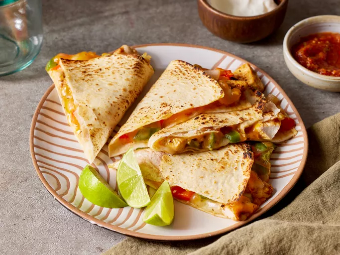

Home
Chicken Quesadilla Recipe

From Allrecipes: "This chicken quesadilla recipe is great to make for parties.
Zesty chicken, cooked peppers, and melted cheese are a delightful combination.
Cut into wedges and serve with sour cream and salsa."
Quesadilla? Now we're speaking my freaking language!
Ingredients
- 1 pound skinless, boneless chicken breast, diced
- 1.27 ounce fajita seasoning
- 1 tablespoon vegetable oil
- 2 green bell peppers, chopped
- 2 red bell peppers, chopped
- 1 onion, chopped
- 10 tortillas
- 8 ounce shredded cheddar cheese
- 8 ounce shredded monterey jack cheese
- 1 tablespoon bacon bits
Directions
- Preheat broiler, grease baking sheet
- Spread seasoned chicken onto baking sheet broil for 5 minutes
- Preheat oven to 350 F
- Fry bell peppers, onion, and broiled chicken in saucepan, until softened.
- Layer ingredients over half of each tortilla, folding in half and placing onto baking sheet.
- Bake until cheeses have melted, about 10 minutes
- "WOOHOO!" - Homer Simpson, MSc, Nuclear Physics